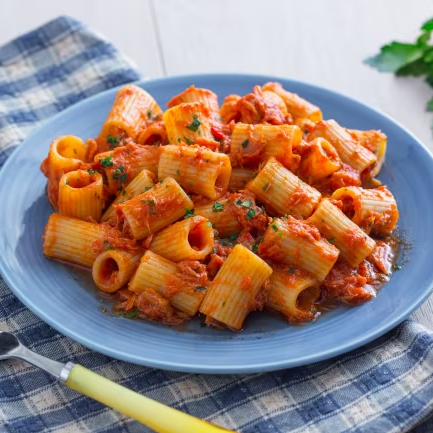

Tuna Pasta

Description
Simple and economic, this dish is extremely quick to prepare and very tasty.
Ingredients
(1 serving)
- 100 g penne (or other pasta)
- 100 g tuna
- Extravirgin olive oil
- Garlic
- Capers
- Olives
Steps
- Put a pot with water to boil; add salt to it.
- In a pan, heat some oil with one or two cloves of garlic.
- Mince the olives and the capers, then throw them in the oil.
- When the water is boiling, add also the tuna to the pan.
- When the pasta is ready, drain it directly in the pan and mix well. Add some olive oil on top.